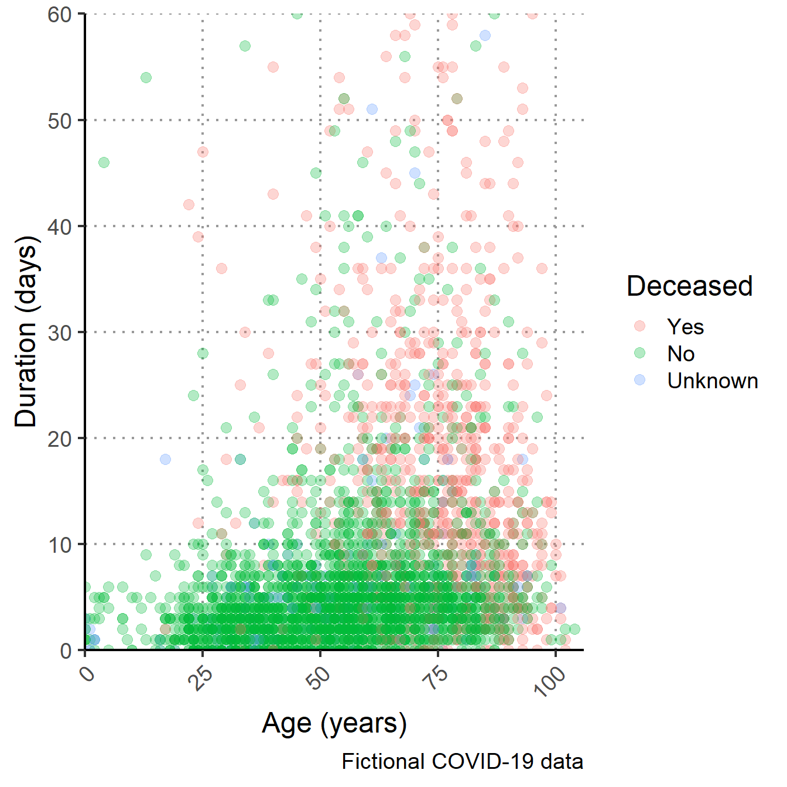
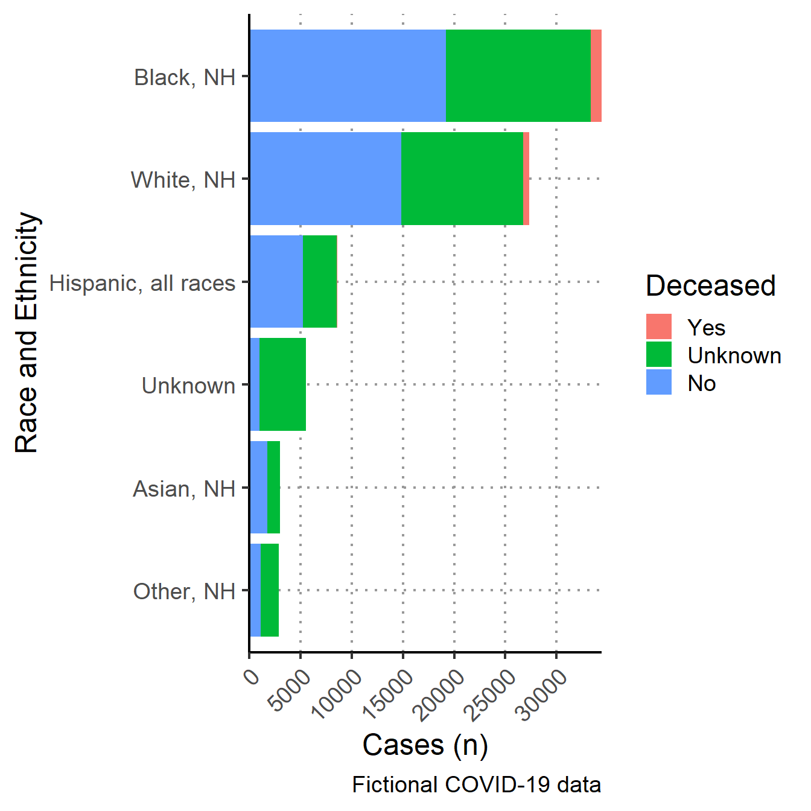
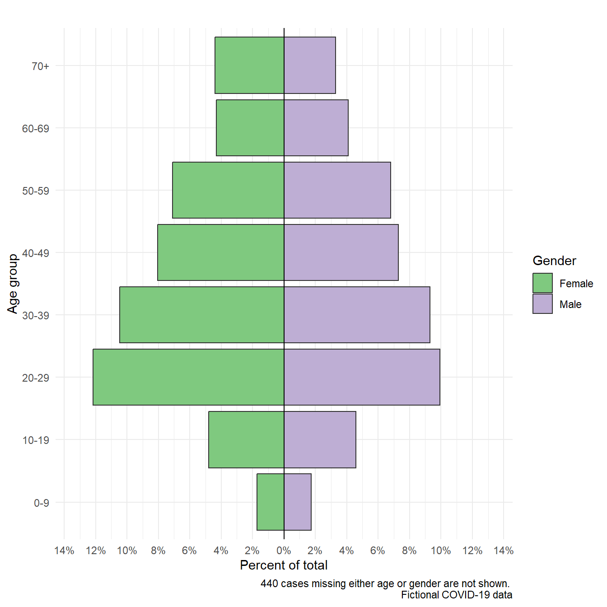
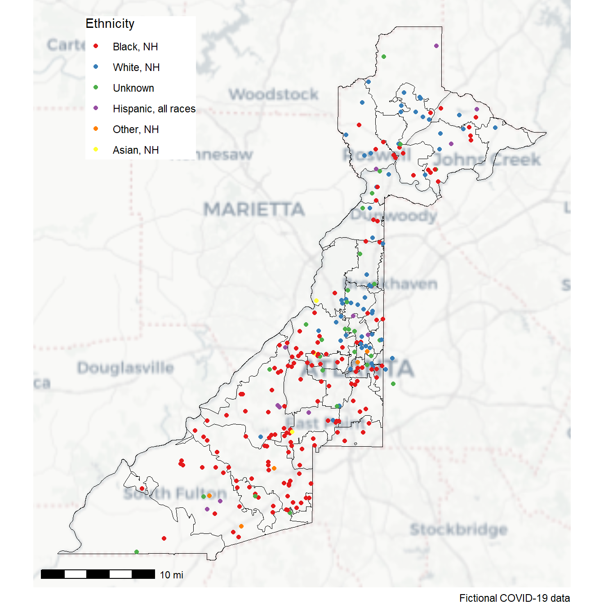
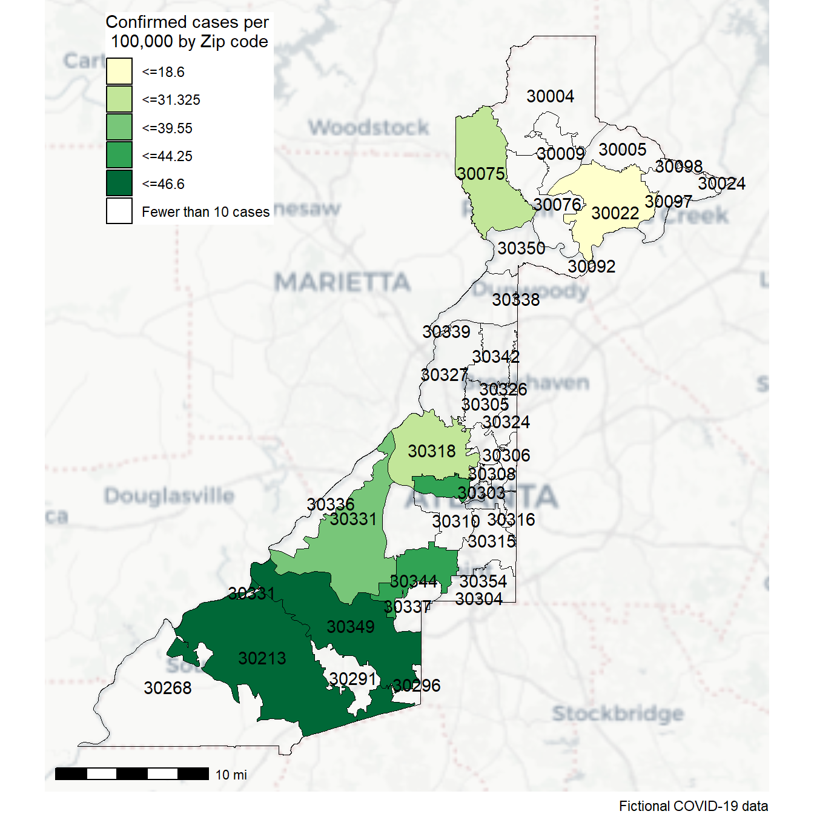
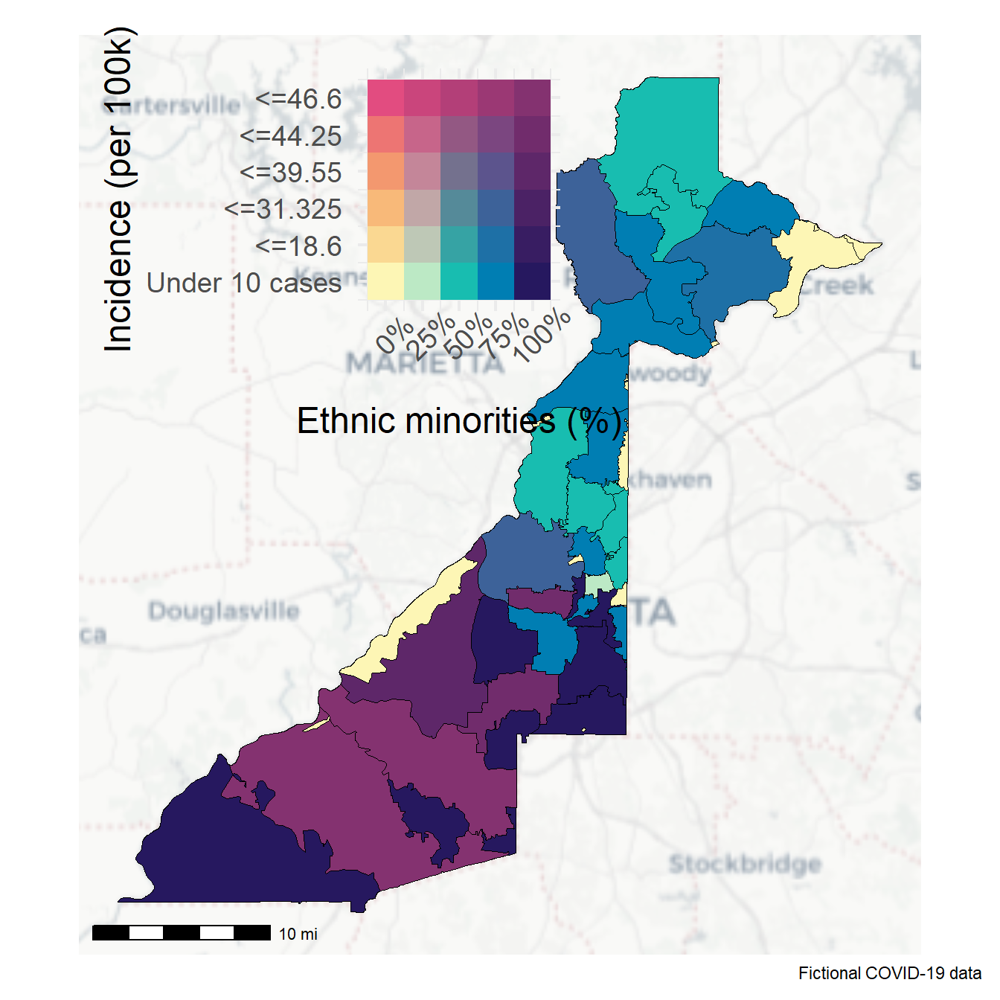
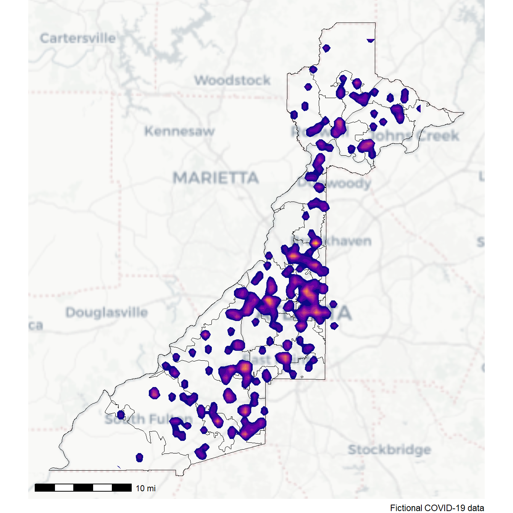

ebola_linelist %>%
filter(
age > 25,
district == "Bolo"
)2 Fulton (EN)
2.1 Overview
Case study characteristics Name: Fulton
Language: English
Tool: R
Location: United States
Disease: COVID-19
Keywords:
Acknowledgements
Tutorial authors: Alex Spina, Neale Batra, Mathilde Musset, Henry Laurenson-Schafer
Data source: Anonymised and jittered data provided by Fulton County for training purposes
2.2 Instructions
2.2.1 Getting Help
There are several ways to get help:
- Look for the “hints” and solutions (see below)
- Post a question in Applied Epi Community with reference to this case study
2.2.1.1 Hints and Solutions
Here is what the “helpers” look like:
Click to read a hint
Here you will see a helpful hint!
Click to see a solution (try it yourself first!)
Here is more explanation about why the solution works.
2.2.1.2 Posting a question in the Community Forum
… description here about posting in Community…
2.3 Introduction to this case study script
This is a an example R-markdown script which demonstrates how to create an automated outbreak situation report for COVID-19 in Fulton county, USA. The data used are anonymised and fake (scrambled), for example purposes only.
- We demonstrate how to import, clean and analyse your data.
- Analysis is organised by time, place and person.
- For the purpose of the case study we separate this by descriptive analysis and visualisation (normally this would be mixed together of course)
- The visualisation section is organised in to place, time and person. This is to simplify flow for didactic delivery.
- The visualisation section is organised in to place, time and person. This is to simplify flow for didactic delivery.
- Analysis is loosely based off the monthly epidemiology reports for Fulton county
- For the purpose of the case study we separate this by descriptive analysis and visualisation (normally this would be mixed together of course)
- Text within <! > will not show in your final document.
- The other parts such as slashes (///), dashes (-) and tildes (~) are just aesthetic
- These comments are used to explain the code chunks.
- We refer to functions in curly brackets, e.g. {dplyr} and functions end in brackets, e.g. count()
- This comment will not show up when you knit the document.
- You can delete them if you want.
- Feedback & suggestions are welcome at the GitHub issues page
- Alternatively email us at: epirhandbook@gmail.com
3 Descriptive analysis
This section will be analysing data by time, place, and person to produce descriptive tables.
3.1 Summary
- As of June 23 2021, Fulton County has recorded 81757 confirmed cases of COVID-19.
- As of June 23 2021, Fulton County has recorded 1701 (2.1%) deaths.
- Among all confirmed cases of COVID-19 in Fulton County, 5277 (6.5%) required hospitalization.
3.2 Time
Error in opts_current_table(): if a label (epiweek_table) is defined, chunk option `tbl-cap` should also be defined.As you can see from above in Table @ref(tab:timetab) we can see clear trends in reporting patterns - cases increase in waves and peak in December 2020.
3.3 Place
Error in opts_current_table(): if a label (zip_table) is defined, chunk option `tbl-cap` should also be defined.3.4 Person
Error in opts_current_table(): if a label (demographics_tab) is defined, chunk option `tbl-cap` should also be defined.3.4.1 Risk factors for mortality
Error in opts_current_table(): if a label (simple_stats) is defined, chunk option `tbl-cap` should also be defined.Error in opts_current_table(): if a label (regression) is defined, chunk option `tbl-cap` should also be defined.As seen in Table @ref(tab:regrtab), mortality was associated with being male (OR 2.02; 95% CI 1.44, 2.85), being white (OR 1.61; 95% CI 1.08, 2.36)and longer hospital stays (OR 1.14; 95% CI 1.12, 1.17).
4 Visualisation
4.1 Person
As we see below in Figure @ref(fig:agehospplot) there appears to be an association between older age, length of hospital stay and mortality. We saw this in Table @ref(tab:regrtab) as well for the individual associations, although we did not check for interaction and confounding.



4.2 Time
Error in `plot()`:
! Arguments in `...` must be used.
✖ Problematic argument:
• n.breaks = 24
ℹ Did you misspell an argument name?4.3 Place



